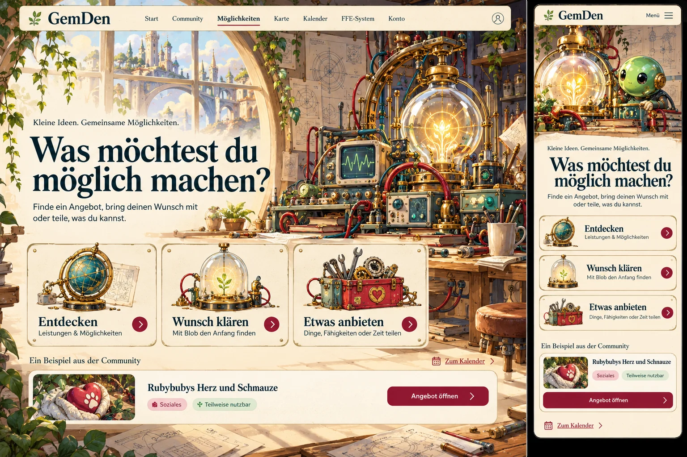
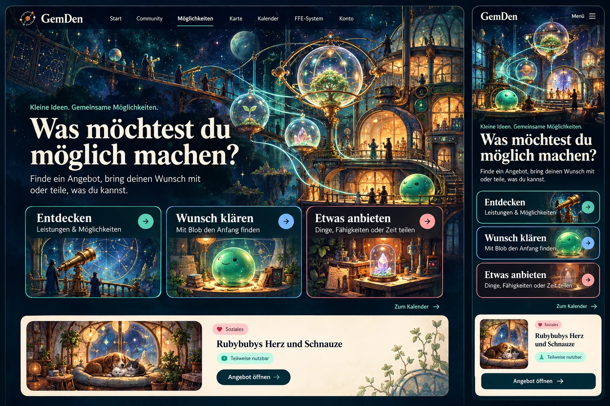
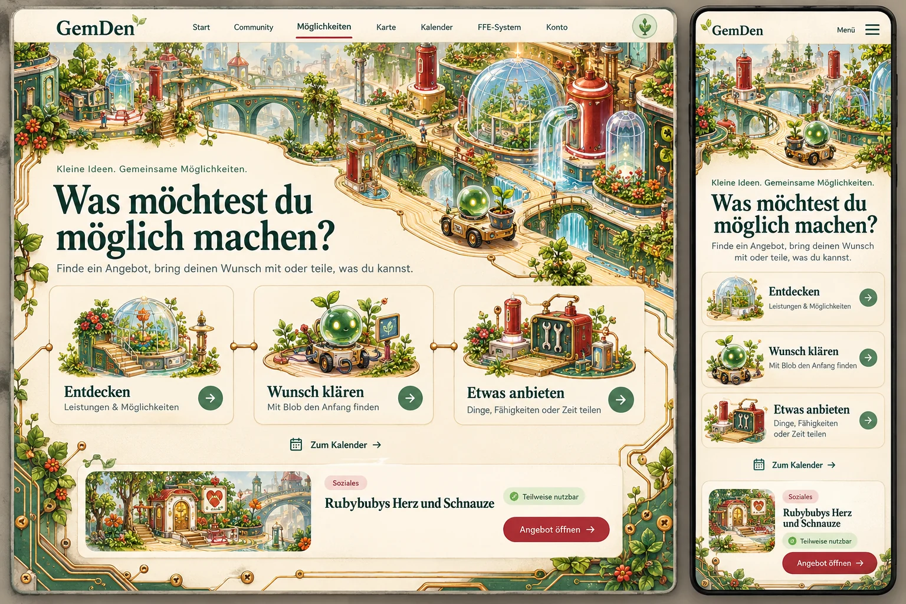

Ausgewählt · Version 1
Möglichkeiten.
Drei technische Welten.
Jeder Entwurf zeigt eine Desktop- und eine Handyansicht. Tippe auf das Bild oder auf „Bild groß öffnen“, um die Details anzusehen und hineinzuzoomen.
Die Erfinderwerkstatt live öffnen → · Umgesetzte Seite als Bild ansehen
1 · Die Erfinderwerkstatt
Warme Ingenieurswelt mit Messgeräten, Glasapparaturen, Petrol und Messing.

2 · Das Sternenlabor
Eine nächtliche Entdeckerwelt mit Lichtkammern, Umlaufbahnen und warm beleuchteten Laboren.

3 · Das Schaltkreis-Biotop
Eine lebendige Platinenwelt: Leiterbahnen werden zu Wegen, Bauteile zu kleinen Gebäuden.
